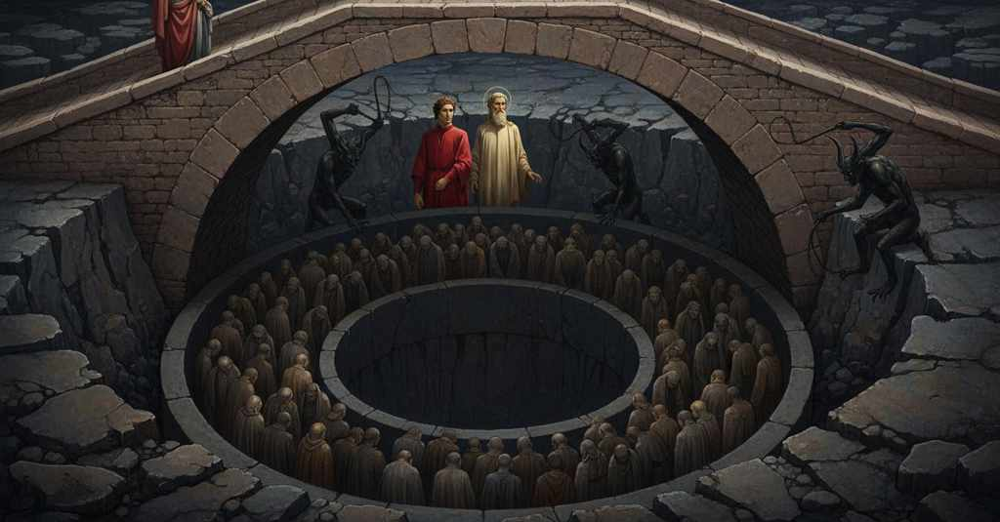

Inferno — Canto 18

1
Luogo è in inferno detto Malebolge,
There is a place in Hell called Malebolge,
地獄にマーレボルジェと呼ばれる場所がある、
2
tutto di pietra di color ferrigno,
all of stone the color of iron,
全てが鉄色の石でできており、
3
come la cerchia che dintorno il volge.
like the circle that turns around it.
それを囲む周壁のように。
4
Nel dritto mezzo del campo maligno
In the very middle of the malignant field
その邪悪な野のちょうど真ん中に
5
vaneggia un pozzo assai largo e profondo,
yawns a well, very wide and deep,
非常に広く深い井戸がぽっかりと口を開けており、
6
di cui suo loco dicerò l’ordigno.
of which, in its place, I will tell the structure.
その構造については然るべき場所で語ろう。
7
Quel cinghio che rimane adunque è tondo
The belt that thus remains is round
したがって残された環状の帯は円形で
8
tra ’l pozzo e ’l piè de l’alta ripa dura,
between the well and the foot of the high, hard bank,
井戸と高い硬い崖の麓との間にあり、
9
e ha distinto in dieci valli il fondo.
and has its bottom divided into ten valleys.
その底は十の谷に分かたれている。
10
Quale, dove per guardia de le mura
As where, for the guard of the walls,
城壁を守るために
11
più e più fossi cingon li castelli,
more and more ditches encircle the castles,
幾重にも堀が城を囲むように、
12
la parte dove son rende figura,
the part where they are renders a figure,
その部分が形を成しているのと同様の
13
tale imagine quivi facean quelli;
such an image those made there;
そのような様をここではそれらがなしていた。
14
e come a tai fortezze da’ lor sogli
and as at such fortresses from their thresholds
そしてそのような砦で、その入り口から
15
a la ripa di fuor son ponticelli,
to the outer bank there are little bridges,
外の岸辺へと小さな橋があるように、
16
così da imo de la roccia scogli
so from the base of the rock spurs of rock
そのように岩の麓から岩橋が
17
movien che ricidien li argini e ’ fossi
moved that cut across the banks and the ditches
土手と堀を横切って伸びており
18
infino al pozzo che i tronca e raccogli.
down to the well that truncates and gathers them.
それらを断ち切り集める井戸まで。
19
In questo luogo, de la schiena scossi
In this place, shaken from the back
この場所で、ゲリュオンの背から
20
di Gerïon, trovammoci; e ’l poeta
of Geryon, we found ourselves; and the poet
降ろされて、我々はいた。そして詩人は
21
tenne a sinistra, e io dietro mi mossi.
kept to the left, and I moved behind him.
左へと進み、私はその後に続いた。
22
A la man destra vidi nova pieta,
On my right hand I saw new pity,
右手には新たな憐れみ、
23
novo tormento e novi frustatori,
new torment and new scourgers,
新たな苦罰と新たな鞭打つ者たちを見た、
24
di che la prima bolgia era repleta.
with which the first pouch was replete.
それらで第一の濠は満たされていた。
25
Nel fondo erano ignudi i peccatori;
In the bottom were the naked sinners;
底には罪人たちが裸でいた。
26
dal mezzo in qua ci venien verso ’l volto,
from the middle on this side they came toward our face,
中央からこちら側では我々の顔の方へやって来て、
27
di là con noi, ma con passi maggiori,
on the other side with us, but with greater strides,
向こう側では我々と同じ方向に、しかしより大股で進んでいた、
28
come i Roman per l’essercito molto,
as the Romans, for the great host,
ローマ人が、大群衆のために、
29
l’anno del giubileo, su per lo ponte
in the year of the Jubilee, upon the bridge
聖年の年に、橋の上で
30
hanno a passar la gente modo colto,
have arranged a way for the people to pass,
人々を通過させるために巧みな方法を取るように、
31
che da l’un lato tutti hanno la fronte
so that on one side all have their brows
一方では皆が額を
32
verso ’l castello e vanno a Santo Pietro,
toward the Castle and go to Saint Peter's,
城の方へ向け、聖ペテロへと行き、
33
da l’altra sponda vanno verso ’l monte.
from the other bank they go toward the Mount.
もう一方の岸では山の方へと行くように。
34
Di qua, di là, su per lo sasso tetro
On this side, on that, upon the grim stone
こちらでも、向こうでも、陰鬱な岩の上を
35
vidi demon cornuti con gran ferze,
I saw horned demons with great whips,
私は大きな鞭を持った角ある悪魔たちを見た、
36
che li battien crudelmente di retro.
who beat them cruelly from behind.
彼らを後ろから残酷に打ち据えていた。
37
Ahi come facean lor levar le berze
Ah, how they made them lift their heels
ああ、いかに彼らは踵を上げさせられたことか
38
a le prime percosse! già nessuno
at the first blows! already no one
最初の一撃で！もはや誰も
39
le seconde aspettava né le terze.
awaited the second or the third.
二度目や三度目を待つ者はいなかった。
40
Mentr’ io andava, li occhi miei in uno
As I was going, my eyes on one
私が歩いていると、私の目は一人に
41
furo scontrati; e io sì tosto dissi:
were met; and I so quickly said:
出会った。そして私はすぐに言った。
42
«Già di veder costui non son digiuno».
“Already of seeing this one I am not fasting.”
「すでにこの者を見ることに、私は飢えてはいない」。
43
Per ch’ïo a figurarlo i piedi affissi;
Wherefore I, to make him out, fixed my feet;
そのため私は彼をよく見ようと足を止め、
44
e ’l dolce duca meco si ristette,
and the sweet duke with me halted,
そして優しい導き手は私と共に立ち止まり、
45
e assentio ch’alquanto in dietro gissi.
and consented that I might go back a ways.
私が少し後ろへ戻るのを許した。
46
E quel frustato celar si credette
And that whipped one thought to hide himself
そしてその鞭打たれた者は身を隠せると信じ
47
bassando ’l viso; ma poco li valse,
by lowering his face; but it little availed him,
顔を伏せたが、ほとんど役に立たなかった。
48
ch’io dissi: «O tu che l’occhio a terra gette,
for I said: “O you who cast your eye to the ground,
というのも私が言ったからだ。「おお、汝、目を地に投げかける者よ、
49
se le fazion che porti non son false,
if the features that you wear are not false,
もし汝の持つ顔立ちが偽りでなければ、
50
Venedico se’ tu Caccianemico.
you are Venedico Caccianemico.
汝はヴェネーディコ・カッチャネミーコだな。
51
Ma che ti mena a sì pungenti salse?».
But what brings you to such stinging sauces?”
しかし何が汝をかくも辛いソースへと導いたのか？」。
52
Ed elli a me: «Mal volontier lo dico;
And he to me: “Unwillingly I say it;
すると彼は私に言った。「不本意ながらそれを言おう。
53
ma sforzami la tua chiara favella,
but your clear speech compels me,
しかし汝の明晰な言葉が私に強いるのだ、
54
che mi fa sovvenir del mondo antico.
which makes me remember the ancient world.
それは私に古き世界を思い出させる。
55
I’ fui colui che la Ghisolabella
I was the one who Ghisolabella
私こそが、あのギゾラベッラを
56
condussi a far la voglia del marchese,
led to do the will of the marquis,
侯爵の望みを叶えるよう導いた者だ、
57
come che suoni la sconcia novella.
however the ugly story may sound.
その醜い噂がどのように響こうとも。
58
E non pur io qui piango bolognese;
And not only I, a Bolognese, weep here;
そしてここで嘆くボローニャ人は私だけではない。
59
anzi n’è questo loco tanto pieno,
rather this place is so full of us,
それどころか、この場所は彼らで満ち満ちている、
60
che tante lingue non son ora apprese
that so many tongues are not now taught
サーヴェナ川とレーノ川の間で『sipa』と言うことを
61
a dicer ‘sipa’ tra Sàvena e Reno;
to say ‘sipa’ between Savena and Reno;
今学んでいる舌の数よりも多く。
62
e se di ciò vuoi fede o testimonio,
and if of this you want faith or testimony,
そしてもしこのことについて確証か証拠が欲しいなら、
63
rècati a mente il nostro avaro seno».
recall to mind our avaricious nature.”
我々の貪欲な心を思い起こすがいい」。
64
Così parlando il percosse un demonio
As he was speaking, a demon struck him
彼がそう語っていると、一人の悪魔が彼を打った
65
de la sua scurïada, e disse: «Via,
with his whip, and said: “Away,
その鞭で、そして言った。「行け、
66
ruffian! qui non son femmine da conio».
pimp! here there are no women for coin.”
女衒め！ここには金で買う女はいないのだ」。
67
I’ mi raggiunsi con la scorta mia;
I rejoined myself with my guide;
私は私の案内役と再び合流した。
68
poscia con pochi passi divenimmo
then with a few steps we came
それから数歩で我々は至った
69
là ’v’ uno scoglio de la ripa uscia.
to where a rocky bridge issued from the bank.
岸から岩の橋が突き出ている場所に。
70
Assai leggeramente quel salimmo;
Very lightly we climbed it;
我々は極めて軽々とそれを登り、
71
e vòlti a destra su per la sua scheggia,
and turning right up along its ridge,
そして右に折れてその岩の背を進み、
72
da quelle cerchie etterne ci partimmo.
from those eternal circles we departed.
それらの永遠の環を我々は後にした。
73
Quando noi fummo là dov’ el vaneggia
When we were there where it arches over
我々が、その下で
74
di sotto per dar passo a li sferzati,
below to give passage to the scourged,
鞭打たれる者たちに道を通すために空洞になっている場所に来た時、
75
lo duca disse: «Attienti, e fa che feggia
the duke said: “Hold fast, and make it so that strikes
導き手は言った。「待て、そしてその視線に捉えよ
76
lo viso in te di quest’ altri mal nati,
your gaze upon these other ill-born,
これらの他の不運な者たちを、
77
ai quali ancor non vedesti la faccia
whose faces you have not yet seen
彼らの顔を汝はまだ見ていない
78
però che son con noi insieme andati».
because they have been going along with us.”
なぜなら彼らは我々と共に進んでいたからだ」。
79
Del vecchio ponte guardavam la traccia
From the old bridge we watched the line
古い橋から我々は一行を見つめていた
80
che venìa verso noi da l’altra banda,
that was coming toward us from the other side,
向こう側から我々の方へやってくる、
81
e che la ferza similmente scaccia.
and which the whip likewise drove on.
そして鞭が同様に彼らを追い立てるのを。
82
E ’l buon maestro, sanza mia dimanda,
And the good master, without my asking,
そして善き師は、私が尋ねるまでもなく、
83
mi disse: «Guarda quel grande che vene,
said to me: “Look at that great one who comes,
私に言った。「見よ、やってくるあの大いなる者を、
84
e per dolor non par lagrime spanda:
and for all his pain seems to shed no tears:
苦痛のために涙を流すようには見えぬ。
85
quanto aspetto reale ancor ritene!
what a regal aspect he still retains!
なんという王者の風格を未だ保っていることか！
86
Quelli è Iasón, che per cuore e per senno
That is Jason, who by heart and by wit
あれはイアソンだ、その勇気と知恵によって
87
li Colchi del monton privati féne.
deprived the Colchians of the ram.
コルキスの人々から雄羊を奪った者だ。
88
Ello passò per l’isola di Lenno
He passed by the isle of Lemnos
彼はレムノス島を通り過ぎた
89
poi che l’ardite femmine spietate
after the bold and pitiless women
あの無慈悲で大胆な女たちが
90
tutti li maschi loro a morte dienno.
had given all their males to death.
男たちをすべて死に追いやった後で。
91
Ivi con segni e con parole ornate
There with signs and with ornate words
そこで彼は、身振りや飾り立てた言葉で
92
Isifile ingannò, la giovinetta
he deceived Hypsipyle, the young girl
ヒュプシピュレを欺いた、あの乙女を
93
che prima avea tutte l’altre ingannate.
who first had deceived all the others.
彼女は先に他の女たちすべてを欺いていた。
94
Lasciolla quivi, gravida, soletta;
He left her there, pregnant and all alone;
彼は彼女をそこに置き去りにした、身重で、独りきりで。
95
tal colpa a tal martiro lui condanna;
such a crime condemns him to such a martyrdom;
そのような罪が彼をそのような苦罰に定めている。
96
e anche di Medea si fa vendetta.
and also for Medea vengeance is taken.
そしてメディアへの仕打ちの復讐もなされているのだ。
97
Con lui sen va chi da tal parte inganna;
With him goes whoever in such a way deceives;
彼と共に行くのは、そのように欺く者たちだ。
98
e questo basti de la prima valle
and let this be enough about the first valley
そしてこれで第一の谷について知るには十分だろう
99
sapere e di color che ’n sé assanna».
to know and of those it holds in its jaws.”
そしてその谷が内部で噛み砕く者たちについて」。
100
Già eravam là ’ve lo stretto calle
We were already there where the narrow path
我らはすでに狭い道が
101
con l’argine secondo s’incrocicchia,
crosses over the second bank,
第二の土手と交差する場所に来ていた、
102
e fa di quello ad un altr’ arco spalle.
and makes of that a shoulder for another arch.
そしてそこから次の橋へと肩をなしていた。
103
Quindi sentimmo gente che si nicchia
From there we heard people who were whimpering
そこから我らは、うめき声をあげる人々を感じた
104
ne l’altra bolgia e che col muso scuffa,
in the next ditch and who snorted with their snout,
次の濠の中で、鼻を鳴らし、
105
e sé medesma con le palme picchia.
and beat themselves with their own palms.
自らをその掌で叩いているのを。
106
Le ripe eran grommate d’una muffa,
The banks were encrusted with a mold,
両岸は黴で覆われていた、
107
per l’alito di giù che vi s’appasta,
from the vapor from below that cakes itself there,
下からの呼気がそこにこびりついて固まり、
108
che con li occhi e col naso facea zuffa.
that with the eyes and the nose made a battle.
それが目と鼻に戦いを挑んでくるかのようだった。
109
Lo fondo è cupo sì, che non ci basta
The bottom is so dark that there is no place for us
底はあまりに暗く、我らには見えず
110
loco a veder sanza montare al dosso
to see without climbing to the ridge
橋の背に登らねばならなかった
111
de l’arco, ove lo scoglio più sovrasta.
of the arch, where the bridge looms highest.
岩が最も高く突き出ている場所へ。
112
Quivi venimmo; e quindi giù nel fosso
There we came; and from there down in the ditch
そこへ我らは来た。そしてそこから下の溝に
113
vidi gente attuffata in uno sterco
I saw people plunged in a filth
私は人々が糞の中に浸かっているのを見た
114
che da li uman privadi parea mosso.
that seemed to have come from human privies.
それは人間の厠から汲み出されたようであった。
115
E mentre ch’io là giù con l’occhio cerco,
And while I searched there below with my eye,
そして私が下を眼で探していると、
116
vidi un col capo sì di merda lordo,
I saw one with a head so smeared with shit,
私は一人の頭が糞でひどく汚れているのを見た、
117
che non parëa s’era laico o cherco.
that it did not appear if he were layman or cleric.
それが俗人か聖職者か見分けがつかぬほどに。
118
Quei mi sgridò: «Perché se’ tu sì gordo
He shouted at me: "Why are you so greedy
そいつが私を怒鳴った、「なぜお前はそれほど貪欲なのだ
119
di riguardar più me che li altri brutti?».
to stare more at me than at the other filthy ones?".
他の汚い者たちより私を見つめるとは？」。
120
E io a lui: «Perché, se ben ricordo,
And I to him: "Because, if I remember correctly,
そして私は彼に言った、「なぜなら、もし私の記憶が正しければ、
121
già t’ho veduto coi capelli asciutti,
I have seen you before with your hair dry,
私はかつて乾いた髪のお前を見たことがある、
122
e se’ Alessio Interminei da Lucca:
and you are Alessio Interminei of Lucca:
そしてお前はルッカのアレッシオ・インテルミネイだ。
123
però t’adocchio più che li altri tutti».
therefore I single you out more than all the others".
だから私は他の誰よりもお前を注視するのだ」。
124
Ed elli allor, battendosi la zucca:
And he then, beating his pate:
すると彼は、己の頭を叩きながら言った、
125
«Qua giù m’hanno sommerso le lusinghe
"Down here the flatteries have submerged me
「この下で私を沈めたのは、おべっかの数々だ
126
ond’ io non ebbi mai la lingua stucca».
with which my tongue was never weary".
それを言うのに私の舌は決して飽きることがなかった」。
127
Appresso ciò lo duca «Fa che pinghe»,
After this the duke said, "See that you push,"
その後、師は「視線を押し進めよ」、
128
mi disse, «il viso un poco più avante,
he told me, "your gaze a little further forward,
と私に言った、「もう少し前の方へ、
129
sì che la faccia ben con l’occhio attinghe
so that your eye may well reach the face
その顔を眼でしっかりと捉えられるように
130
di quella sozza e scapigliata fante
of that filthy and disheveled wench
あの汚れて髪を振り乱した女の、
131
che là si graffia con l’unghie merdose,
who there scratches herself with her shitty fingernails,
あそこで糞まみれの爪で自らを掻きむしり、
132
e or s’accoscia e ora è in piedi stante.
and now squats and now stands on her feet.
今はうずくまり、今は立ち上がっている。
133
Taïde è, la puttana che rispuose
That is Thaïs, the whore who replied
あれはタイスだ、かの娼婦は答えた
134
al drudo suo quando disse “Ho io grazie
to her lover when he said, 'Have I great
愛人に『私はお前に大層感謝されているか？』
135
grandi apo te?”: “Anzi maravigliose!”.
favor with you?': 'Nay, marvelous!'.
と言われた時、『いえ、驚くほどです！』と」。
136
E quinci sian le nostre viste sazie».
And with this let our sight be sated".
「そして、これにて我らの視線は満たされたとしよう」。